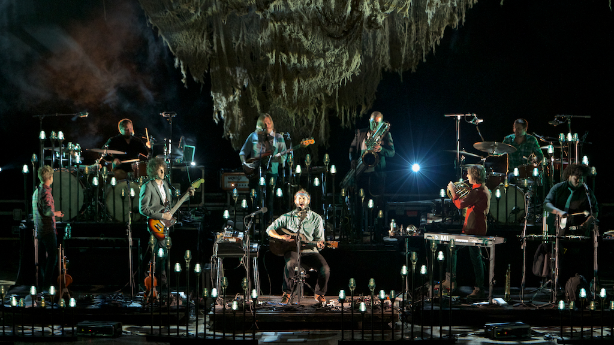

Bon Iver (/boʊn iːˈvɛər/ Bone-Hiver) is an American indie folk band founded in 2006 by singer-songwriter Justin Vernon. The name "Bon Iver" derives from the French phrase bon hiver (French pronunciation: [bɔn‿ivɛːʁ]) ("good winter"), taken from a greeting on Northern Exposure.
Vernon released Bon Iver's debut album, For Emma, Forever Ago, independently in July 2007. The majority of that album was recorded while Vernon spent three months isolated in a cabin in northwestern Wisconsin. The band later won in 2012 the Grammy awards for Best New Artist and Best Alternative Music Album for their album Bon Iver, Bon Iver.
After the breakup of his band DeYarmond Edison, the ending of a relationship, and a bout with mononucleosis hepatitis, Vernon left Raleigh, North Carolina, and moved back to Wisconsin. He spent the oncoming winter months at his father's cabin in Dunn County, Wisconsin. According to Vernon, it was during this time that the "Bon Iver" moniker first entered his mind; while bedridden with mononucleosis, he began watching the 1990s TV series Northern Exposure on DVD. One episode depicts a group of citizens in Alaska, where the show is set, emerging from their homes into the first snowfall of the winter and wishing one another bon hiver (pronounced [bɔn‿ivɛːʁ], French for "good winter"). This was initially transcribed by Vernon as "boniverre"; however, when he learned of its proper French spelling, he elected not to use it, deciding "hiver" reminded him too much of liver, the site of his illness at the time. In his person production he uses an array of tools ranging from synths such as Dave Smith's Prophet 8 to Steinway & Sons Model D Concert Grand Piano.
